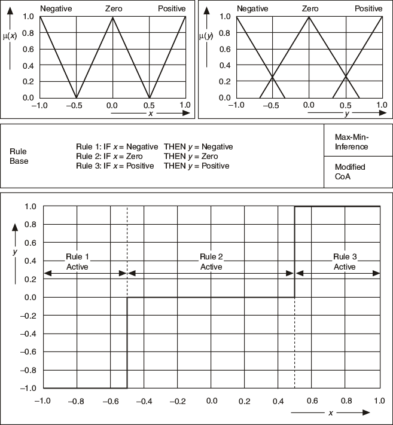

JavaScript is disabled. Details
The following image shows the controller I/O characteristic that results when non-overlapping antecedent terms describe the input variable.

Only one rule is active for each input situation that leads to the stepped controller characteristic.